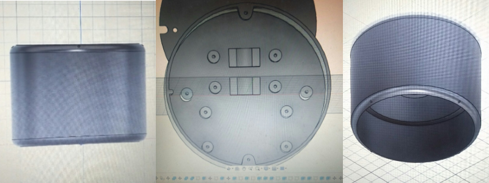
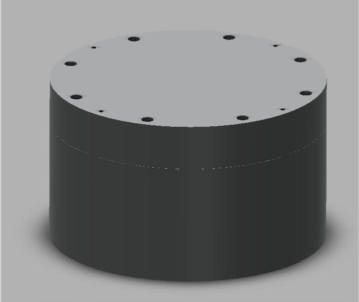
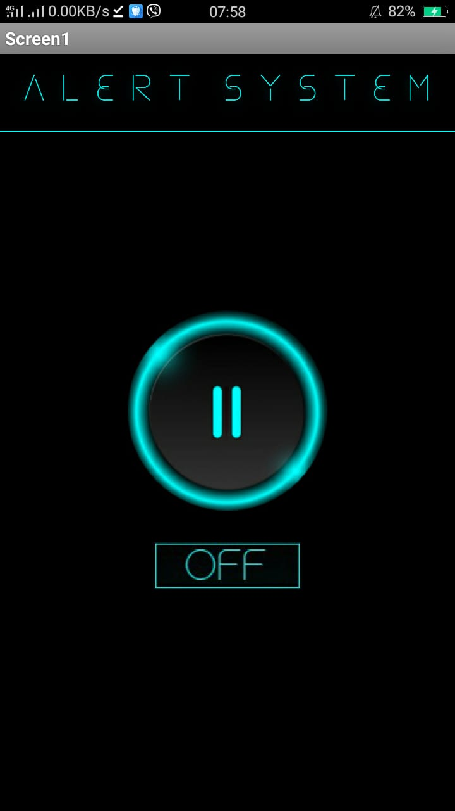

WEEK 2
April 17 2021
1. Replacing ESP 32 with ESP 8266
The initial plan was to implement using ESP 32 but we were met with some roadblocks . ESP 32 has bluetooth but its ranges only 10m radius. Since we needed our app to function within a wider range we had to opt for wifi based over a bluetooth for connection. We also decided to switch to ESP8266 beacuse we felt it would be easier to do what we were planning with this microcontroller.
2. Cad Model
After working with two to three designs , we finialized with the design model given below. The design was chosen beacuse it very aesthetic , ergonomic and easy to use . The safety features were also mentioned while designing. To view the final design Click here.
Initial Design
Final Design
3. Working on MIT App Inventor .
The front end was developed in MIT APP inventor. The application had a simple UI , with a button that enbale to On / Off the alarm system . The application will be connected to the ESP8266 via Wifi connection.
